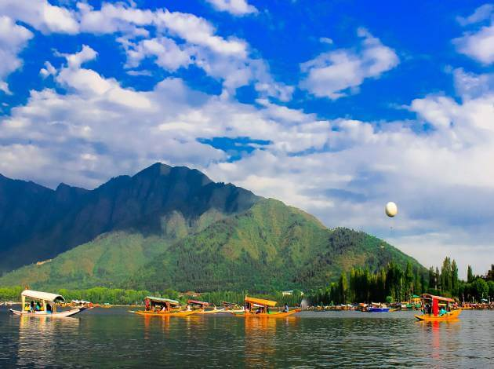

Jammu & Kashmir Tourism – Known as ‘Jannat,’ which means paradise or heaven in Urdu, Kashmir is the most sought-after tourist place in India. The crown of the country, Kashmir is a place where people find solace in nature. The interaction with snow-capped mountains, sometimes far, sometimes pretty near, whether floating on a picturesque lake or exploring colourful varieties of tulips in a garden – is only possible when you are visiting the ever-so-beautiful place on earth, Kashmir. The glistening lakes, gushing mountain rivers and their dreamlike sceneries, the verdant valleys and their snow-covered forms and the religious places – all make Kashmir one of the best tourist places in the world, as well as in India. To add a special flavour to it, there are Kashmiri people, who offer impeccable hospitality and the Kashmiri tradition, without experiencing which your Jammu and Kashmir Tour cannot be possible. Waking up with a cup of hot Kahwa on a cold morning in a Kashmiri homestay and ending the day with a platter of homemade Wazwan – is the best possible way to know Kashmir and its amazing places.There are numerous places in Jammu and Kashmir that you can visit in summer as well as winter. Places like Srinagar and Gulmarg look amazing when they become fully snow-covered. Gulmarg is also the best ski destination in India and attracts thousands of adventure lovers during winter. Besides, Sonamarg, Pahalgam and Jammu are some of the perfect places to escape from the scorching summer. There are several places to stay in Kashmir including homestays and hotels under the Jammu and Kashmir Tourism Department. If you also want to visit Kashmir this year, you can browse our website for the best tour packages for Kashmir. These Kashmir tour packages come at budget-friendly costs and cater for the best in the market. ]